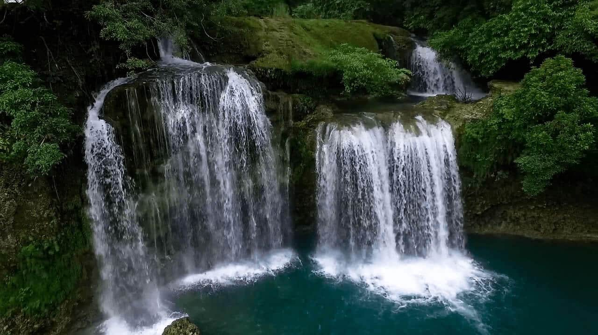
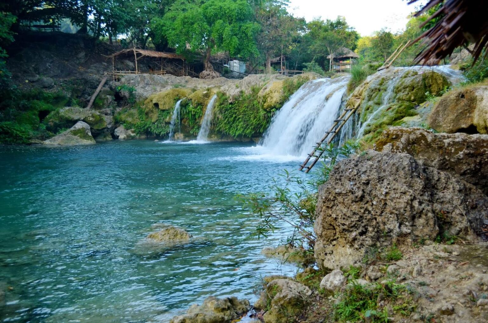
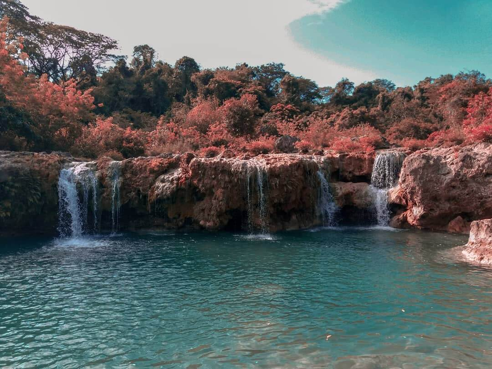
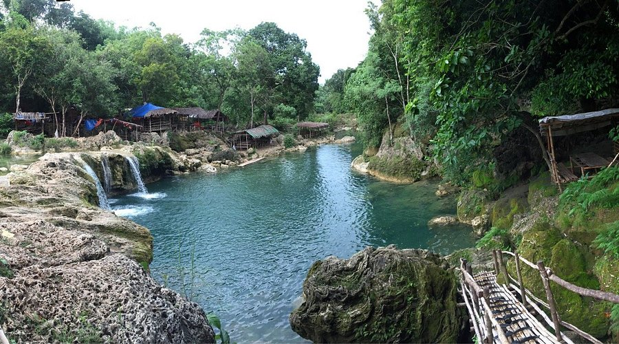
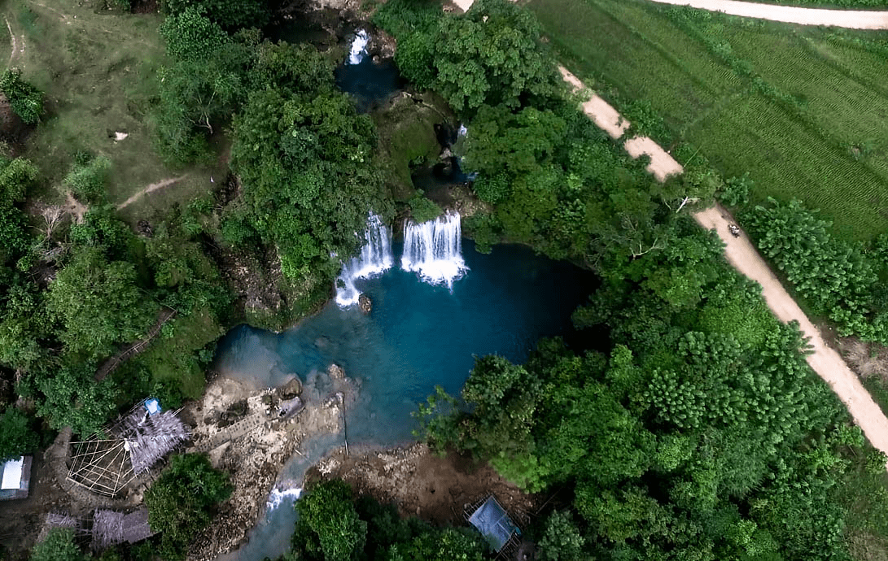

The Bolinao Falls Beach Area in Bolinao, Pangasinan, Philippines, is a scenic destination combining crystal-clear waterfalls and nearby coastal beaches. Known for its turquoise cascades surrounded by limestone cliffs and lush greenery, it is a popular spot for swimming, cliff diving, and nature photography.
Natural Features
Bolinao Falls comprises a series of three waterfalls nestled in the lush forests of Bolinao. Each cascade has its own distinct character. Bolinao Falls 1 is the tallest and most dramatic, attracting visitors who enjoy cliff jumping into its deep turquoise basin.
The continuous flow of spring water over limestone terrain has carved pools and rock formations that create a scenic natural landscape. The cool water and surrounding tropical vegetation give the falls a secluded, refreshing atmosphere that contrasts with nearby beaches.

Bolinao Falls 2 and 3 are calmer, wider, and shallower, making them ideal for families and casual swimmers. The cascading water flows into natural pools that are suitable for wading, while smaller streams feed into rock pools where children can play.
The surrounding forested area adds shade and a sense of serenity, and the limestone cliffs form dramatic backdrops for photography, picnicking, and quiet reflection. Many visitors consider the falls a hidden gem because of their natural beauty and relatively light development.


The waterfalls' turquoise waters and verdant surroundings also create a micro-ecosystem supporting tropical plants and freshwater species. This mix of flowing water, limestone rocks, and forested slopes highlights the region's unique geological formations.
Tourism and Activities
Visitors often begin at the first waterfall, enjoying its clear plunge pool and scenic setting. Swimming is a popular activity, and some locals cliff jump from safe ledges during suitable water conditions.
Walking along the riverbanks to reach the next falls gives visitors a chance to explore changing scenery and natural pools. Bolinao Falls 2 offers a wider basin for relaxing, wading, or picnicking on the rocky banks, while Bolinao Falls 3 provides quieter surroundings for calm swims and photos.

Access and Infrastructure
The Bolinao Falls Beach Area is accessible by tricycle or private vehicle from Bolinao town proper and nearby coastal spots. Roads leading to the falls may include partially paved and narrow sections, so travel time can vary based on conditions.
Modest entrance fees and parking charges are collected at the site to support basic maintenance and visitor facilities. Because amenities are limited near the falls, many travelers include this stop in a broader Bolinao tour with Patar Beach, Cape Bolinao Lighthouse, and the Enchanted Cave.

Cultural and Environmental Significance
The falls contribute to Bolinao's growing ecotourism identity, attracting visitors who want both scenic nature and freshwater recreation. Small-scale tourism around the waterfalls supports local livelihoods through homestays, food stalls, and guide services.
Local government units and community groups emphasize responsible tourism practices to protect freshwater ecosystems and scenic integrity. These efforts include maintaining cleanliness, discouraging littering, and promoting awareness of the site's fragile natural environment.